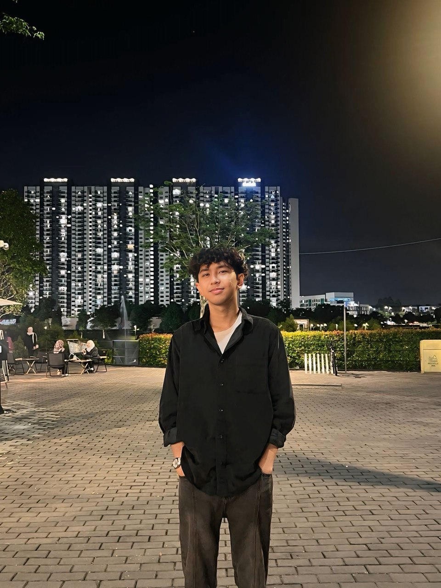
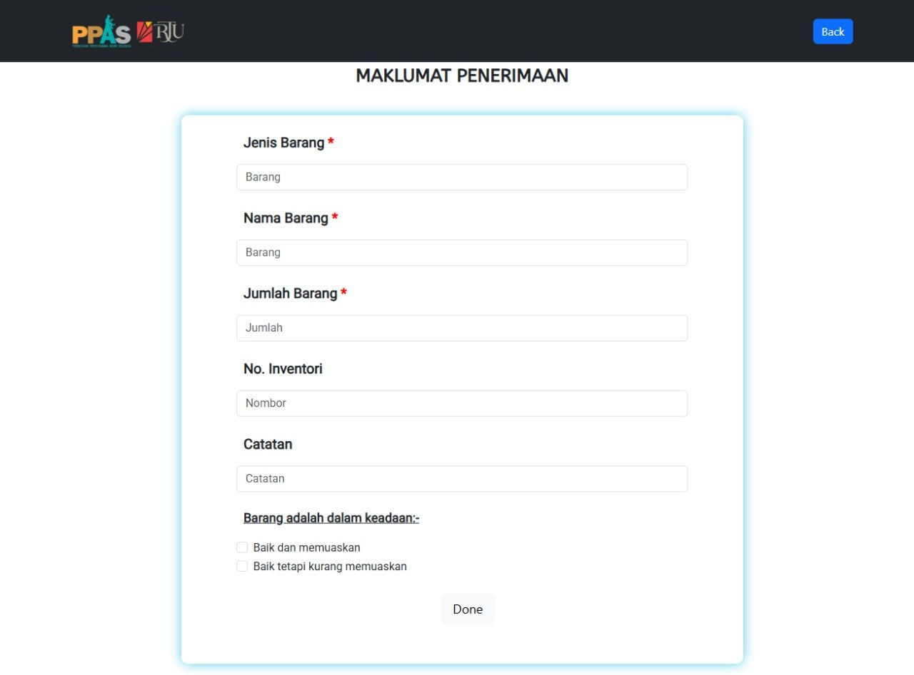
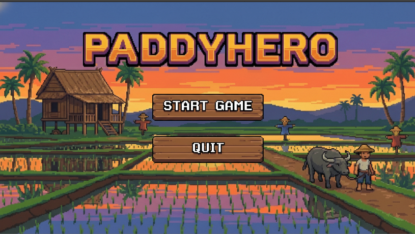
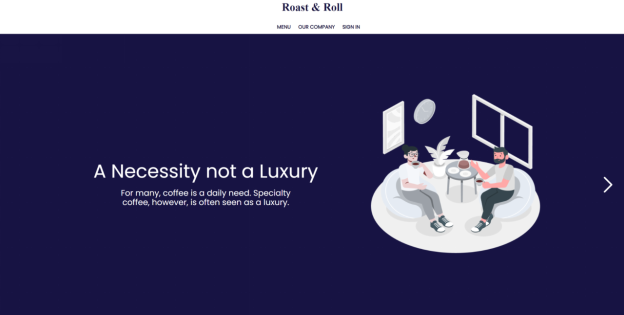
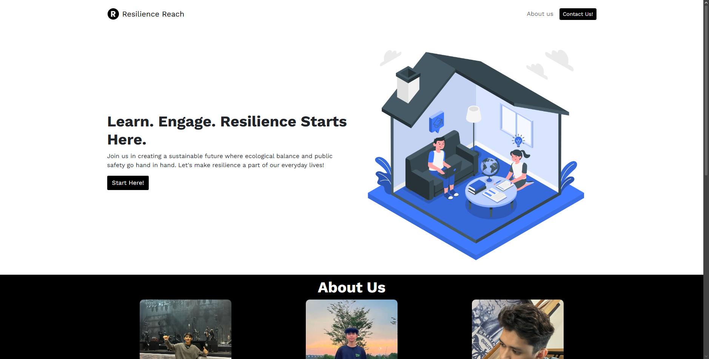
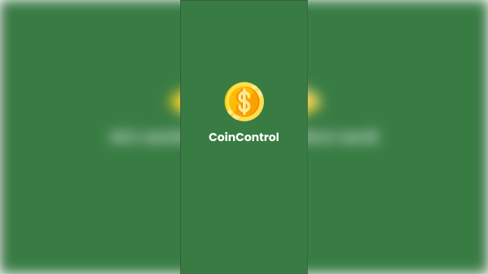

ABOUT ME
Muhamad Alif Imran Bin Norhasni
I am a Computer Science graduate with a Bachelor's Degree in Computer Science (Multimedia Computing) from Universiti Teknologi MARA (UiTM), complemented by a Diploma in Computer Science and Mathematics from UiTM Cawangan Raub, Pahang.
I have hands-on experience in web development, system maintenance, database management, and technical support through academic projects and industry internships. My technical skills include PHP, Laravel, Java, C#, JavaScript, HTML, CSS, and MySQL, along with experience using tools such as Unity and Visual Studio Code.
Throughout my academic and professional journey, I have developed a strong interest in building practical digital solutions, solving technical challenges, and continuously expanding my knowledge of technology. I aspire to grow as a software developer and contribute to innovative projects that create meaningful impact.

SKILLS
Technologies and tools I've worked with through academic projects and internships.
Web Development
Database & Data
Tools & Platforms
Professional Skills
- Problem Solving
- Teamwork
- Communication
- Adaptability
- Technical Support
- Troubleshooting
WORK EXPERIENCE
My professional journey and hands-on experience in IT support, software development, and system maintenance.
IT Intern
Aldercy QPay Sdn. Bhd.
Supported Smartbox Selangor and eTanah-related operations through system maintenance, technical troubleshooting, data analysis, customer support, and kiosk preventive maintenance.
Responsibilities & Contributions
- Maintained and supported Smartbox Selangor system operations, including troubleshooting application and workflow issues.
- Analyzed JSON data and investigated submission errors to identify potential causes and escalate integration-related issues when necessary.
- Performed content corrections, data maintenance, and system checks to support operational accuracy.
- Assisted users with technical issues, including account access, password resets, missing information, and system functionality.
- Conducted preventive maintenance on Smartbox kiosks, including hardware checks, locker door testing, and network connectivity verification.
- Collected and organized local authority contact information to support business operations.
- Assisted with technical and audiovisual operations during TAMCOF 2026.
Skills & Technologies
IT Intern
Perbadanan Perpustakaan Awam Selangor (PPAS)
Developed a web-based Acknowledgement Form Portal to digitize internal item transportation workflows while supporting library IT operations and technical maintenance.
Responsibilities & Contributions
- Developed an Acknowledgement Form Portal using Laravel, PHP, and MySQL.
- Implemented form submission, approval workflows, status tracking, and PDF generation.
- Created a database-backed system to replace manual paper-based acknowledgement forms.
- Supported role-based access for authorized library staff.
- Diagnosed and troubleshot hardware and software issues on public computers.
- Assisted library staff with daily technical operations and organizational activities.
- Supported educational and creative activities organized for library visitors.
Skills & Technologies
FEATURED PROJECTS
A selection of applications and systems I've developed through academic projects and practical experience.

Internship Project
PPAS Acknowledgement Form Portal
A web-based acknowledgement form management system that digitizes item transport submissions and approvals between library branches.

Final Year Project
PaddyHero
A 2D educational farming simulator that raises climate change awareness through interactive paddy farming gameplay.

Academic Project
Roast & Roll Cafe System
A web-based food ordering platform for browsing menus, placing orders, and choosing delivery or pickup services.

Academic Project
Resilience Reach System
An interactive educational platform with learning materials, scenario simulations, and quizzes on social-ecological resilience.

Academic Project
CoinControl
A mobile personal finance application for tracking income, expenses, and budgeting.
LET'S CONNECT
Have an opportunity or a project in mind? I'd be happy to hear from you.
Get in Touch
I'm open to entry-level opportunities in software development, web development, and IT. Feel free to reach out for professional opportunities, collaborations, or project discussions.
- Email alifimrannorhasni@gmail.com
- LinkedIn Muhamad Alif Imran
- GitHub GitHub Pages portfolio
- Location Shah Alam, Selangor
- Availability Open to Work